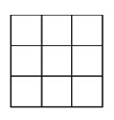

例1
解：
- 要使相乘后的乘积是4的倍数，此乘积质因数分解后应该有两个2相乘，也就是说所有抽出的卡片上的数需要贡献出两个质因子2
- 1~100这100个数中，包含50个奇数，50个偶数，其中只有偶数能提供1个或多个质因子
- 最坏的情况下，前50个都抽出的是质数，第51个抽出的是一个偶数但不是一个4的倍数。
- 所以至少需要抽出52张卡片。
例2
解：
- 这11个数中，除数字3以外，共有5对的差为15：
5，20
8，23
11，26
14，29
17，32
- 要使取出的数中不能有差为15的数，可以取出3，再加上5对数中每对中的任意一个，共6个数。再多一个数，就必然有5对中的某一对都被取出来了。
- 所以任意取7个数，至少有两个数差为15。
例3
解：
- 这是一个等差数列，共有8对数的和为52：
2，50
5，47
8，44
11，41
14，38
17，35
20，32
23，29
26是单出来的
- 要使取出来的数没有两个数的和为52，最多可以有1+8=9个数，其中1是数字26，8是从上述8对中每对任取一个。
- 因此，任意取出10个数，一定能保证有两个数的和为52。
例4
解：
- 要使取的自然数中没有两个数的差是7，意味着如果选了自然数k，那么k+7、k+14等等都不能再选，k−7、k−14等等也不能再选。
| 不能选 | 可以选 | 不能选 |
| ...，k−7 | k | k+7，... |
| ...，k−6 | k+1 | k+8，... |
| ...，k−5 | k+2 | k+9，... |
| ...，k−4 | k+3 | k+10，... |
| ...，k−3 | k+4 | k+11，... |
| ...，k−2 | k+5 | k+12，... |
| ...，k−1 | k+6 | k+13，... |
- 所以，最多可以取7个连续的自然数，这样它们中任意两个的差都不是7的倍数。但只要再多一个数，就一定有两个数的差是7的倍数。
- 因此，至少取8个自然数数，才能保证至少有两个数的差是7的倍数
例5
解：
- 根据题意，选出的数中，任意两个数的和都不能在被选中的数里面
- 那么，可以选取数最多的方法是从最大的数开始取起，因为大的数的和一定不在这2018个数中
- 因此取的数是：2018，2017，...，1010，1009。从1008开始，都不能再取了。因为1008+1009=2017，在前面取的数里。1+1009=1010，也在前面取的数里
- 最多可取的数的个数：2018−1009+1=1010
例6
解：
- 两位数从10到99，共90个，其数字和最小为1，最大为18。不同的数字和包含的两位数的个数如下：
| 数字和 |
1 |
2 |
3 |
4 |
5 |
6 |
7 |
8 |
9 |
10 |
11 |
12 |
13 |
14 |
15 |
16 |
17 |
18 |
| 数字举例 |
10 |
11, 20 |
12, 21, 30 |
13, ..., 40 |
14, ..., 50 |
15, ..., 60 |
16, ..., 70 |
17, ..., 80 |
18, ..., 90 |
19, ..., 91 |
29, ..., 92 |
39, ..., 93 |
49, ..., 94 |
59, ..., 95 |
69, ..., 96 |
79, 88, 97 |
89, 98 |
99 |
| 数字的个数 |
1 |
2 |
3 |
4 |
5 |
6 |
7 |
8 |
9 |
9 |
8 |
7 |
6 |
5 |
4 |
3 |
2 |
1 |
- 要使任意取出的n个数中有三个数字和相等，最坏的情况是，把18种数字和的数字都取一遍。余下的数字中，数字和的种数只有16种了（因为1和18都只有一个数）。这时最坏的情况是把余下的16种再各取一遍，这时会有两个数的数字和相等。再多取一个，就一定有三个数的数字和相等了。
- 因此n的最小值是：18+16+1=35
例7
解：
- 这21个数可以分成10组，每组中一个数是另一个的3倍。50不属于任何组。
2, 6
3, 9
...
13, 39
14, 42
- 要使取出的数中，没有任何两个数存在3倍关系，最多能取1+10=11个数，其中1表示50，10表示从10组中每组任意挑一个数。
- 因此，如果取了12个数，一定有两个数存在3倍关系。
例8
解：
- 把这个正方形分成3×3的9个小正方形，每个小正方形的面积正好为1平方米

- 要使4个点组成的四边形面积都大于等于1平方米，意味着没有4个点落在同一个小正方形内
- 要使得没有4个点落在同一个小正方形内，最多可以放(4−1)×9=27个点。因此，任意放入28个点，必有4个点落在同一个小正方形内，它们组成的四边形的面积一定小于1平方米。